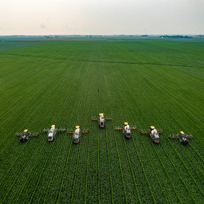

Cultivations
the agricultural process of preparing soil and growing crops, involving techniques like tillage, soil aeration, and weed management.
More
Soil Requirements
Soil requirements are essential for plant health, providing a foundation that offers structural support, nutrients, water, and oxygen for root development.
More
Hervesting Techniques
Harvesting techniques include manual methods using hand tools like sickles, and mechanized systems using harvesters for efficiency.
More
Varieties
Improved crop varieties are developed through scientific breeding to enhance resilience against climate change, pests, and to increase yields.
More